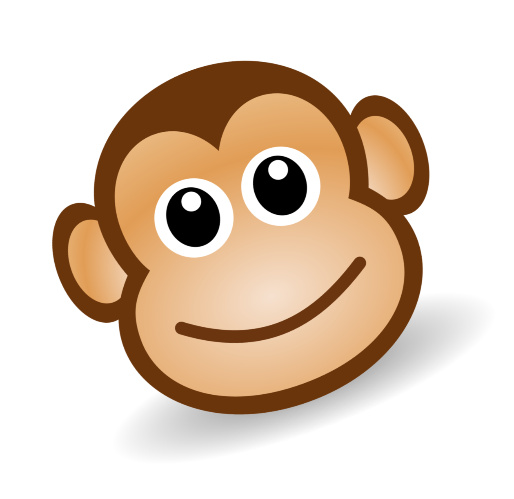

<nav class="navbar navbar-default navbar-static-top" role="navigation">
	<div class="container-fluid">
		<!-- Brand and toggle get grouped for better mobile display -->
		<div class="navbar-header">
			<button type="button" class="navbar-toggle" data-toggle="collapse" data-target="#bs-example-navbar-collapse-1">
				<span class="sr-only">Toggle navigation</span>
				<span class="icon-bar"></span>
				<span class="icon-bar"></span>
				<span class="icon-bar"></span>
			</button>
			<a class="navbar-brand" href="index.html" id="kapfun-brand">
				KAPFUN
			</a>
		</div>

		<!-- Collect the nav links, forms, and other content for toggling -->	
		<div class="collapse navbar-collapse" id="bs-example-navbar-collapse-1">
			<ul class="nav navbar-nav">
				<li><a href="index.html">Home</a></li>
				<li><a href="top.html">Top Ten</a></li>
				<li><a href="submit.html">Submit</a></li>
				<li><a href="#">About Kapfun</a></li>
				<li><a href="#">How It Works</a></li>
			</ul>
			<ul class="nav navbar-nav navbar-right">
				
			</ul>
			<span class="navbar-brand hidden-md hidden-sm hidden-xs" id="kapfun-tagline">THE INTERNET'S KAPTION KONTEST</span>
		</div><!-- /.navbar-collapse -->

	</div><!-- /.container-fluid -->
</nav>
<div class="container" id="kapfun-main">
	<div class="col-xs-12">
		<div data-content="main"></div>
	</div>
</div>